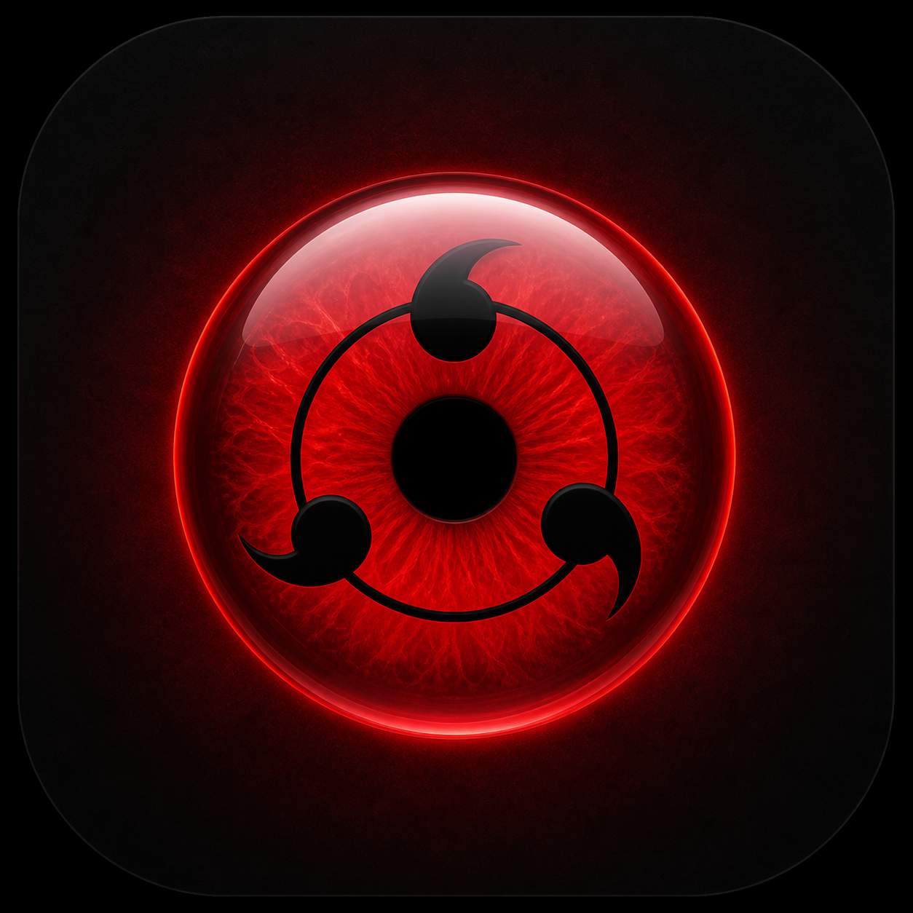

写轮眼
项目
模型
配音工作台
新任务
设置
选择工作区
刷新
还没配置端点与 API Key,生成链路跑不了——先完成设置(解构侧工具不受影响)。
去设置
设置
写入仓库根的
.env
,MCP server 重启后生效
① 端点与密钥
网关地址
测试
主 Key
视频 Key
视频端点
测试
② 模型
出图
gpt-image-2
视频生成
grok-imagine-video-1.5
转写
large-v3
medium
TTS 模型
gpt-4o-mini-tts
TTS 音色
alloy
echo
onyx
nova
shimmer
zh-CN-YunxiNeural
zh-CN-XiaoxiaoNeural
Key 只落在本机 .env,已被 gitignore
取消
保存
新任务
流水线由 agent 编排执行——这里生成标准指令,复制后贴进 Cursor / Claude Code 开跑,跑完回这里看产物
流水线
端到端复刻(解构→DNA→换皮→生成→装配)
1:1 复刻(同镜头数/台词量/节奏,换人物素材)
仅解构(切镜+转写+OCR+分镜表,不生成)
本地配乐(ACE-Step:歌词/BPM/调式/风格)
口型同步(LatentSync:单人镜逐镜)
源视频
新题材方向
生成的指令
关闭
复制指令
概览
分镜
台词·花字
生成素材
工程文件
← 选择一个项目